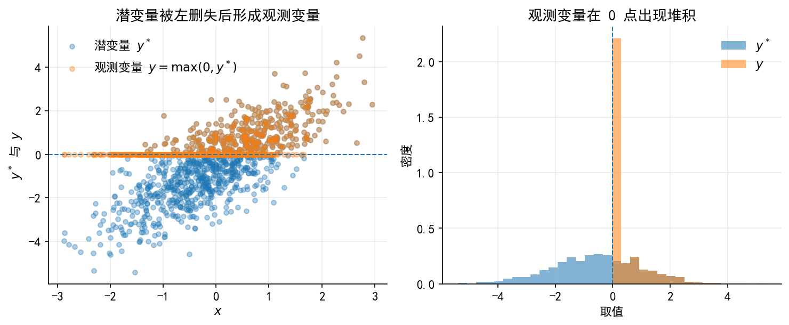
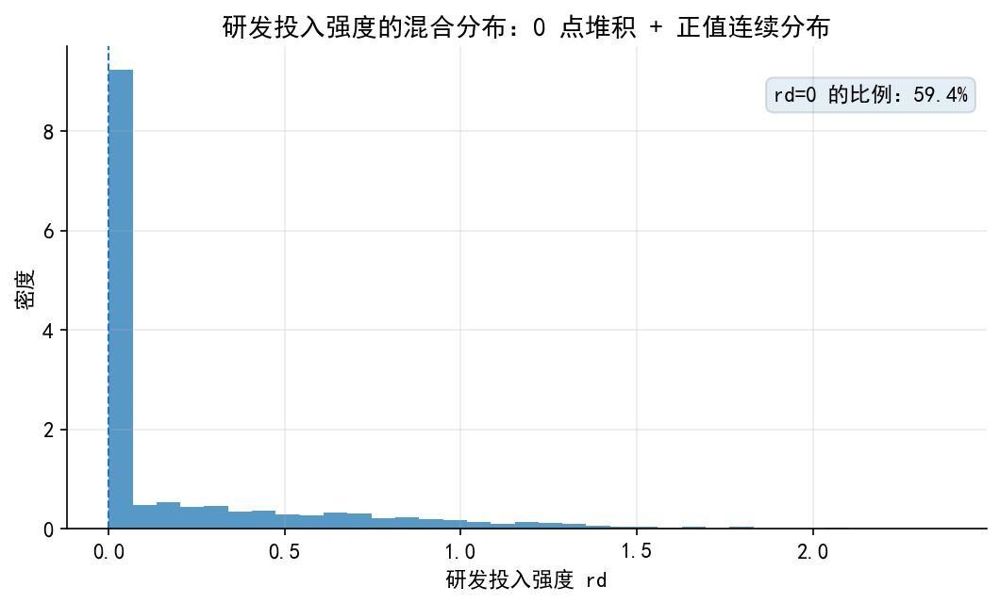
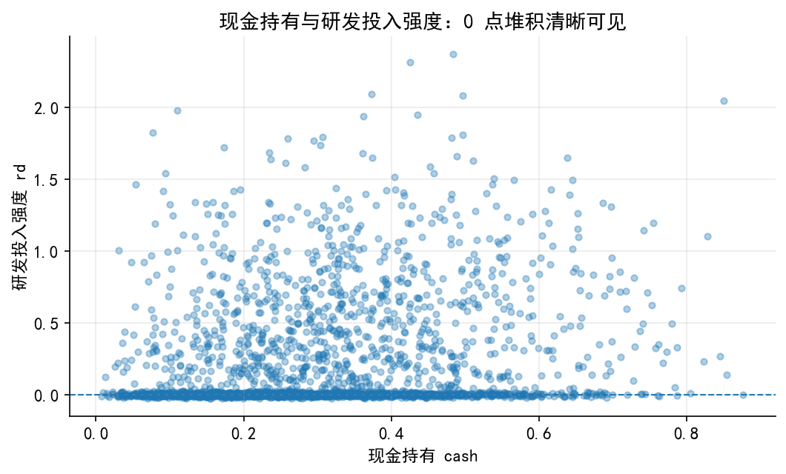
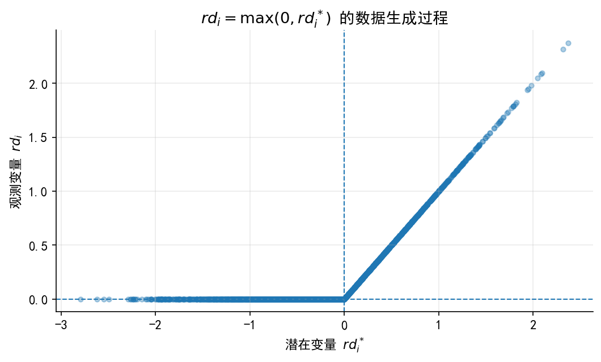
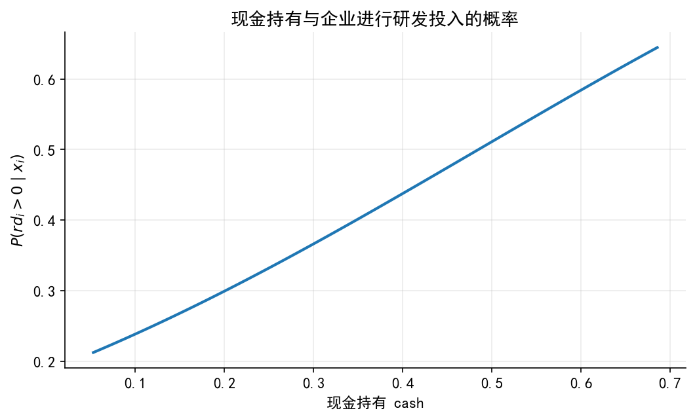
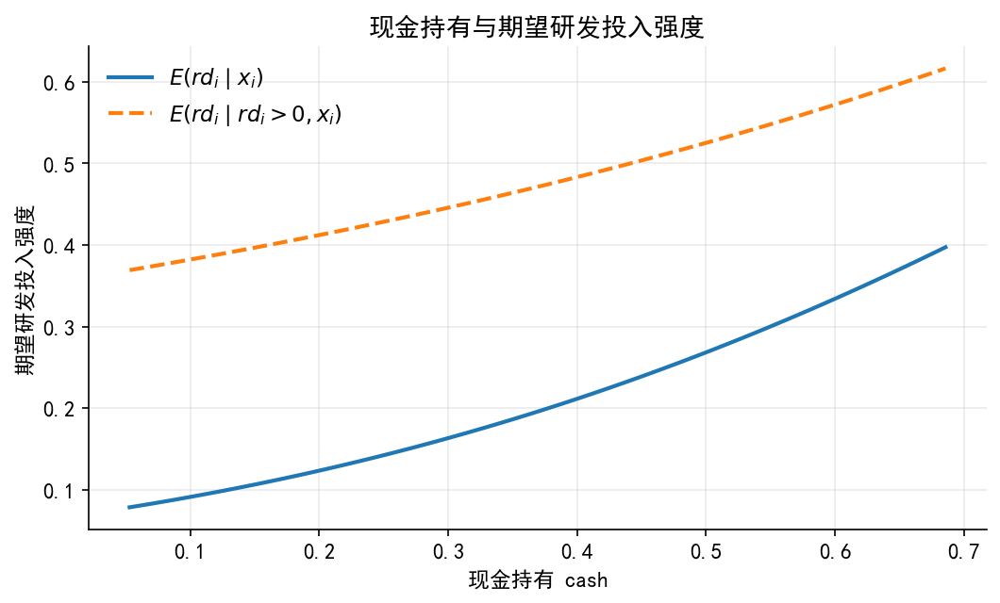
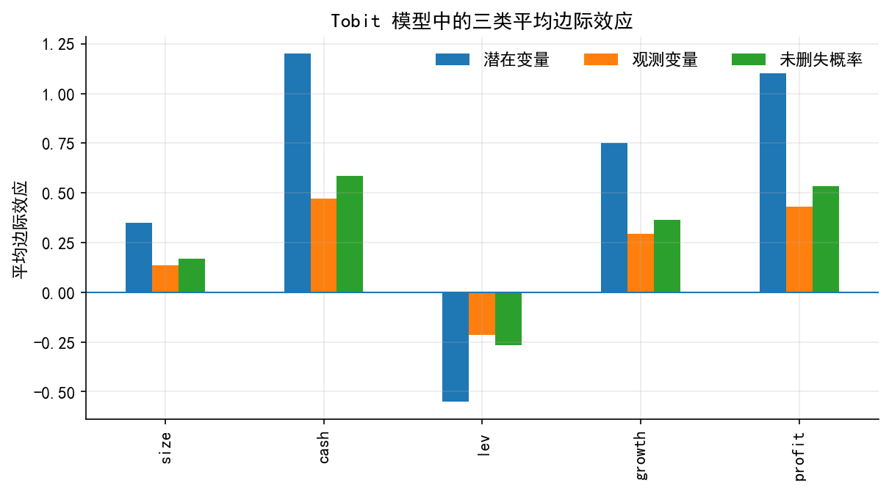

# ============================================================
# 0. 全局设置
# ============================================================
import os
import numpy as np
import pandas as pd
import matplotlib.pyplot as plt
from scipy.stats import norm
# 创建输出文件夹
os.makedirs("./figs", exist_ok=True)
os.makedirs("./data", exist_ok=True)
# 中文字体设置：
# Windows 通常可用 SimHei 或 Microsoft YaHei；
# macOS / Linux 若没有中文字体，图中中文可能无法正常显示，但不影响数据生成。
plt.rcParams["font.sans-serif"] = [
"SimHei", "Microsoft YaHei", "Arial Unicode MS",
"Noto Sans CJK SC", "DejaVu Sans"
]
plt.rcParams["axes.unicode_minus"] = False
# 统一绘图风格
plt.rcParams.update({
"figure.dpi": 150,
"savefig.dpi": 300,
"font.size": 11,
"axes.spines.top": False,
"axes.spines.right": False,
"axes.grid": True,
"grid.alpha": 0.25,
})
# 固定随机种子，保证讲义图形可复现
rng = np.random.default_rng(20260428)38 附：Codes .{unnumbered}
本 Notebook 用于生成 04_tobit_model_lec.ipynb 中调用的图片和模拟数据。本 Notebook 仅用于生成讲义中的插图和模拟数据，主讲义不依赖这里的绘图细节。
运行后会生成两个文件夹：
./figs/：保存讲义中的插图；./data/：保存模拟的企业研发投入数据tobit_rd_sim.csv。
图片命名统一采用 limit_dep_tobit_fig0#_xxx.png，便于后续上传图床或在 Quarto book 中引用。
# ============================================================
# 1. 图 1：潜变量 y* 与观测变量 y 的关系
# ============================================================
n = 1000
x = rng.normal(0, 1, n)
u = rng.normal(0, 1, n)
# 潜变量：可理解为潜在净收益或潜在需求强度
y_latent = -0.5 + 1.2 * x + u
# 观测变量：当潜变量小于等于 0 时，只能观察到 y=0
y_obs = np.maximum(0, y_latent)
fig, axes = plt.subplots(1, 2, figsize=(10, 4.2))
# 左图：潜变量与观测变量
axes[0].scatter(x, y_latent, alpha=0.35, s=18, label=r"潜变量 $y^*$")
axes[0].scatter(x, y_obs, alpha=0.35, s=18, label=r"观测变量 $y=\max(0,y^*)$")
axes[0].axhline(0, linestyle="--", linewidth=1)
axes[0].set_xlabel(r"$x$")
axes[0].set_ylabel(r"$y^*$ 与 $y$")
axes[0].set_title("潜变量被左删失后形成观测变量")
axes[0].legend(frameon=False)
# 右图：分布对比
bins = np.linspace(min(y_latent.min(), y_obs.min()), max(y_latent.max(), y_obs.max()), 35)
axes[1].hist(y_latent, bins=bins, alpha=0.55, density=True, label=r"$y^*$")
axes[1].hist(y_obs, bins=bins, alpha=0.55, density=True, label=r"$y$")
axes[1].axvline(0, linestyle="--", linewidth=1)
axes[1].set_xlabel("取值")
axes[1].set_ylabel("密度")
axes[1].set_title("观测变量在 0 点出现堆积")
axes[1].legend(frameon=False)
fig.tight_layout()
fig.savefig("./figs/limit_dep_tobit_fig01_latent_observed.png", bbox_inches="tight")
plt.show()
# ============================================================
# 2. 生成企业研发投入强度模拟数据
# ============================================================
n = 2500
# 企业规模：可理解为标准化后的 log(总资产)
size = rng.normal(0, 1, n)
# 现金持有：为了简化，生成一个 0 到 1 之间的变量
cash = rng.beta(2.2, 5.0, n)
# 资产负债率：0 到 1 之间
lev = rng.beta(2.3, 3.0, n)
# 成长性和盈利能力：允许出现少量负值
growth = rng.normal(0.08, 0.22, n)
profit = rng.normal(0.05, 0.08, n)
# 随机扰动
sigma_true = 0.65
u = rng.normal(0, sigma_true, n)
# 潜在研发投入净收益或潜在研发投入强度
# 经济含义：
# - size 越大，研发项目吸收能力越强；
# - cash 越高，内部融资约束越弱；
# - lev 越高，债务约束越强；
# - growth 和 profit 越高，研发投入动机越强。
rd_latent = (
-0.45
+ 0.35 * size
+ 1.20 * cash
- 0.55 * lev
+ 0.75 * growth
+ 1.10 * profit
+ u
)
# 观测到的研发投入强度：左删失于 0
rd = np.maximum(0, rd_latent)
df = pd.DataFrame({
"rd": rd,
"rd_latent": rd_latent,
"size": size,
"cash": cash,
"lev": lev,
"growth": growth,
"profit": profit
})
df.to_csv("./data/tobit_rd_sim.csv", index=False, encoding="utf-8-sig")
zero_share = (df["rd"] == 0).mean()
print(f"样本量: {len(df)}")
print(f"rd=0 的比例: {zero_share:.2%}")
df.head()样本量: 2500
rd=0 的比例: 59.44%| rd | rd_latent | size | cash | lev | growth | profit | |
|---|---|---|---|---|---|---|---|
| 0 | 0.175656 | 0.175656 | 0.873198 | 0.101710 | 0.580123 | -0.119186 | 0.082959 |
| 1 | 0.000000 | -1.894596 | -1.347833 | 0.313840 | 0.316863 | 0.271610 | 0.076210 |
| 2 | 0.000000 | -0.178420 | 0.148370 | 0.184377 | 0.658225 | 0.072306 | -0.024811 |
| 3 | 0.000000 | -0.670163 | 1.038085 | 0.262945 | 0.532851 | -0.079404 | 0.008533 |
| 4 | 0.425271 | 0.425271 | 0.374561 | 0.341803 | 0.497331 | 0.344030 | 0.204810 |
# ============================================================
# 3. 图 2：研发投入强度的分布
# ============================================================
fig, ax = plt.subplots(figsize=(7.2, 4.4))
ax.hist(df["rd"], bins=35, alpha=0.75, density=True)
ax.axvline(0, linestyle="--", linewidth=1)
ax.set_xlabel("研发投入强度 rd")
ax.set_ylabel("密度")
ax.set_title("研发投入强度的混合分布：0 点堆积 + 正值连续分布")
txt = f"rd=0 的比例：{zero_share:.1%}"
ax.text(0.98, 0.92, txt, transform=ax.transAxes, ha="right", va="top",
bbox=dict(boxstyle="round,pad=0.35", alpha=0.12))
fig.tight_layout()
fig.savefig("./figs/limit_dep_tobit_fig02_rd_distribution.png", bbox_inches="tight")
plt.show()
# ============================================================
# 4. 图 3：删失点附近的数据特征
# ============================================================
fig, ax = plt.subplots(figsize=(7.2, 4.4))
# 对 rd=0 的点做轻微纵向扰动，避免完全重叠
jitter = rng.normal(0, 0.01, len(df))
rd_jitter = df["rd"] + np.where(df["rd"] == 0, jitter, 0)
ax.scatter(df["cash"], rd_jitter, s=16, alpha=0.35)
ax.axhline(0, linestyle="--", linewidth=1)
ax.set_xlabel("现金持有 cash")
ax.set_ylabel("研发投入强度 rd")
ax.set_title("现金持有与研发投入强度：0 点堆积清晰可见")
fig.tight_layout()
fig.savefig("./figs/limit_dep_tobit_fig03_censoring_pattern.png", bbox_inches="tight")
plt.show()
# ============================================================
# 5. 图 4：潜在研发投入强度与观测研发投入强度
# ============================================================
fig, ax = plt.subplots(figsize=(7.2, 4.4))
ax.scatter(df["rd_latent"], df["rd"], s=16, alpha=0.35)
ax.axvline(0, linestyle="--", linewidth=1)
ax.axhline(0, linestyle="--", linewidth=1)
ax.set_xlabel(r"潜在变量 $rd_i^*$")
ax.set_ylabel(r"观测变量 $rd_i$")
ax.set_title(r"$rd_i=\max(0, rd_i^*)$ 的数据生成过程")
fig.tight_layout()
fig.savefig("./figs/limit_dep_tobit_fig04_latent_rd.png", bbox_inches="tight")
plt.show()
# ============================================================
# 6. 图 5 和图 6：现金持有变化时的概率与期望值
# ============================================================
cash_grid = np.linspace(df["cash"].quantile(0.02), df["cash"].quantile(0.98), 100)
# 其他变量固定在样本均值
size_bar = df["size"].mean()
lev_bar = df["lev"].mean()
growth_bar = df["growth"].mean()
profit_bar = df["profit"].mean()
mu_grid = (
-0.45
+ 0.35 * size_bar
+ 1.20 * cash_grid
- 0.55 * lev_bar
+ 0.75 * growth_bar
+ 1.10 * profit_bar
)
z_grid = mu_grid / sigma_true
prob_pos = norm.cdf(z_grid)
ey_obs = norm.cdf(z_grid) * mu_grid + sigma_true * norm.pdf(z_grid)
ey_pos = mu_grid + sigma_true * norm.pdf(z_grid) / np.clip(norm.cdf(z_grid), 1e-12, None)
# 图 5：P(rd>0 | x)
fig, ax = plt.subplots(figsize=(7.2, 4.4))
ax.plot(cash_grid, prob_pos, linewidth=2)
ax.set_xlabel("现金持有 cash")
ax.set_ylabel(r"$P(rd_i>0\mid x_i)$")
ax.set_title("现金持有与企业进行研发投入的概率")
fig.tight_layout()
fig.savefig("./figs/limit_dep_tobit_fig05_cash_prob.png", bbox_inches="tight")
plt.show()
# 图 6：E(rd | x) 和 E(rd | rd>0, x)
fig, ax = plt.subplots(figsize=(7.2, 4.4))
ax.plot(cash_grid, ey_obs, linewidth=2, label=r"$E(rd_i\mid x_i)$")
ax.plot(cash_grid, ey_pos, linewidth=2, linestyle="--", label=r"$E(rd_i\mid rd_i>0,x_i)$")
ax.set_xlabel("现金持有 cash")
ax.set_ylabel("期望研发投入强度")
ax.set_title("现金持有与期望研发投入强度")
ax.legend(frameon=False)
fig.tight_layout()
fig.savefig("./figs/limit_dep_tobit_fig06_cash_expected_rd.png", bbox_inches="tight")
plt.show()

# ============================================================
# 7. 图 7：三类平均边际效应对比
# ============================================================
X_true = df[["size", "cash", "lev", "growth", "profit"]].copy()
beta_true = pd.Series({
"size": 0.35,
"cash": 1.20,
"lev": -0.55,
"growth": 0.75,
"profit": 1.10
})
mu = (
-0.45
+ 0.35 * df["size"]
+ 1.20 * df["cash"]
- 0.55 * df["lev"]
+ 0.75 * df["growth"]
+ 1.10 * df["profit"]
)
z = mu / sigma_true
Phi_bar = norm.cdf(z).mean()
phi_bar = norm.pdf(z).mean()
me = pd.DataFrame({
"潜在变量": beta_true,
"观测变量": Phi_bar * beta_true,
"未删失概率": (phi_bar / sigma_true) * beta_true
})
fig, ax = plt.subplots(figsize=(8.2, 4.6))
me.plot(kind="bar", ax=ax)
ax.axhline(0, linewidth=1)
ax.set_ylabel("平均边际效应")
ax.set_title("Tobit 模型中的三类平均边际效应")
ax.legend(frameon=False, ncol=3)
fig.tight_layout()
fig.savefig("./figs/limit_dep_tobit_fig07_marginal_effects.png", bbox_inches="tight")
plt.show()
me.round(4)
| 潜在变量 | 观测变量 | 未删失概率 | |
|---|---|---|---|
| size | 0.35 | 0.1374 | 0.1703 |
| cash | 1.20 | 0.4712 | 0.5837 |
| lev | -0.55 | -0.2160 | -0.2675 |
| growth | 0.75 | 0.2945 | 0.3648 |
| profit | 1.10 | 0.4319 | 0.5351 |
39 运行完成检查
如果上述代码顺利运行，当前目录下应该出现：
./data/tobit_rd_sim.csv./figs/limit_dep_tobit_fig01_latent_observed.png./figs/limit_dep_tobit_fig02_rd_distribution.png./figs/limit_dep_tobit_fig03_censoring_pattern.png./figs/limit_dep_tobit_fig04_latent_rd.png./figs/limit_dep_tobit_fig05_cash_prob.png./figs/limit_dep_tobit_fig06_cash_expected_rd.png./figs/limit_dep_tobit_fig07_marginal_effects.png
生成上述文件后，即可运行 Tobit 模型讲义主 Notebook。